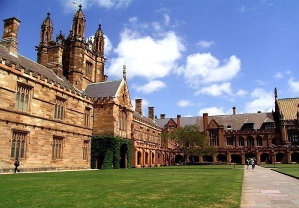
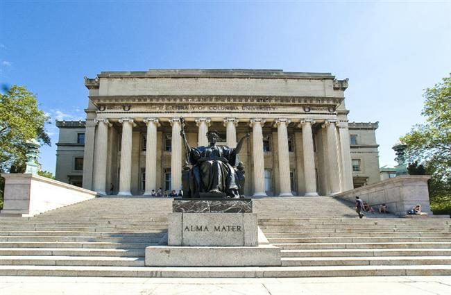
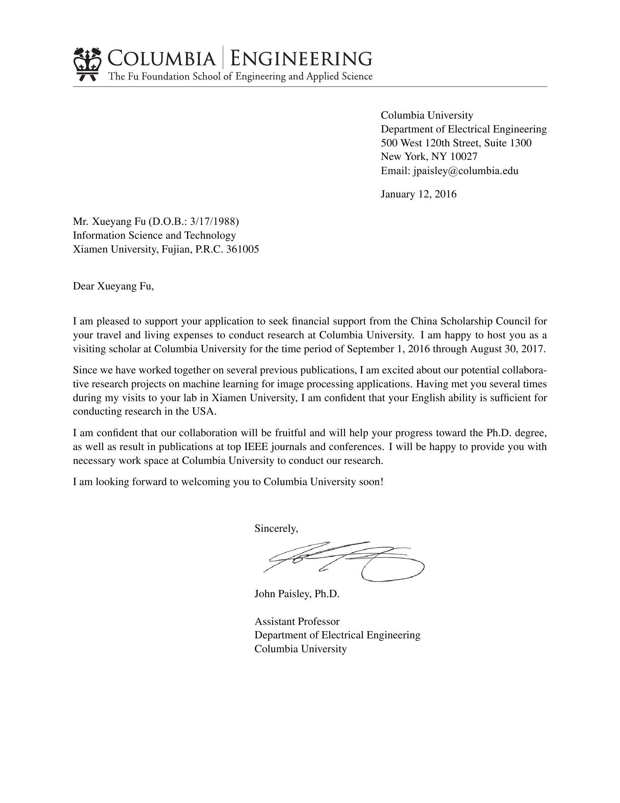

2016年12月，一张来自地球另一端的哥伦比亚大学的邮件，跨国两万公里的海洋与陆地，通过万维网来到了我实验室傅雪阳博士的手中，对其“联合培养博士研究生”项目的申请作出了肯定的答复。这封信件上，写的不仅仅是一种荣誉，更是对傅雪阳博士能力的肯定。至此，傅雪阳博士将去哥伦比亚大学数据科学研究所学习一年。
哥伦比亚大学（Columbia University in the City of New York），简称为哥大（Columbia），是一所位于美国纽约市曼哈顿的世界著名研究型大学，于1754年根据英国国王乔治二世颁布的《国王宪章》而成立，属于私立八大私立常春藤盟校之一。 哥伦比亚大学是美国历史最悠久的5所大学之一。据相关机构统计，哥大校友和教职员工中有104人获得过诺贝尔奖 ，仅次于哈佛大学；
;
傅雪阳博士申请的专业是哥伦比亚大学电子工程专业，跟随 John Paisley 博士学习。 John Paisley 博士是美国哥伦比亚大学（Columbia University）电子工程系助理教授，同时也是哥伦比亚大学数据科学研究所的研究成员；本、硕、博分别于2004，2007 和2010 年在美国杜克大学（Duke University）的电子与计算机工程专业获得，其博士期间导师Lawrence Carin教授（IEEE Fellow）。其后分别于2010-2011和 2011-2013期间在普林斯顿大学和加州大学伯克利分校（UC Berkeley）的计算机科学系从事博士后工作，合作导师分别为机器学习领域国际最顶级专家David Blei教授（ACM Fellow）。和Michael Jordan教授（IEEE Fellow, ACM Fellow）。John Paisley的主要研究领域包括：概率模型与推理方法，贝叶斯非参数方法，信号与信息处理。

青，取之于蓝，而青于蓝；冰，水为之，而寒于水。一个学生要有好的成就，不仅要看老师们丰富知识的引领，更要靠学生们自己圆木警枕、韦编三绝般刻苦求学的态度。我实验室傅雪阳博士，平时坚持每天早起来到实验室进行科研，每日浸在数学符号与代码的海洋里，日复一日，从未松懈过。别人很奇怪为什么他可以坚持，他说，这就是他的兴趣，因为喜欢所以乐爱。傅雪阳博士倾其所学，紧密关注国外的科学最新动态，不断推出科研新成果，为祖国的科技发展事业竭思尽智，做出了巨大的贡献，真可谓是国家之栋梁。不懈的努力，使他摘取了一颗有一颗学界璀璨的成就，用自己的勤奋开拓了美好的前程。相信在哥伦比亚大学这更广阔的舞台上，傅雪阳博士在领域上的知识将会得到更多地夯实与开阔，为祖国的建设出一份力
